Annuitetslån
En annuitet er en serie af lige store betalinger, der foretages med faste intervaller over en bestemt
periode.
Annuiteter anvendes ofte i finansielle sammenhænge, såsom ved afbetaling af huslån, billån,
pensionsopsparinger etc.
Kendetegn ved en annuitet:
- Faste betalinger/ydelser: Hver ydelse i en annuitet er af samme størrelse.
- Regelmæssige intervaller: Betalingerne sker med faste mellemrum, f.eks. månedligt, kvartalsvist
eller
årligt.
- Bestemt tidsperiode: Annuiteten har en fastlagt start- og slutdato.
Anvendelser af annuiteter:
- Lånafbetaling: F.eks. realkreditlån eller billån.
- Pensionsudbetalinger: Regelmæssige udbetalinger fra en pensionsopsparing.
- Investeringer: Strukturerede investeringsprodukter med faste udbetalinger.
- Lejeindtægter: Faste månedlige lejebetalinger.
Låneprofil
Herunder er profiler for betalingstrømmene og restgælden for et annuitetslån over 10 terminer, der er
genereret i finansappen.
Bemærk annuitetslånet har
lige store ydelser summen af afdrag (røde stolper) og renter (orange stolper), men afdragsdelen
(røde stolper) vokser over tid, mens rentedelen (orange stolper) falder over tid.
Låntagers betaler samme beløb som vi kalder ydelsen ved hver termin. Bemærk restgælden i den anden
figur falder kun lidt i starten, mens restgælden falder mere til sidst i låneperioden. Hvis man
opfatter restgælden som en nedadgående trappe, bliver trinnene større over tid.
Annuitetslån cashflows
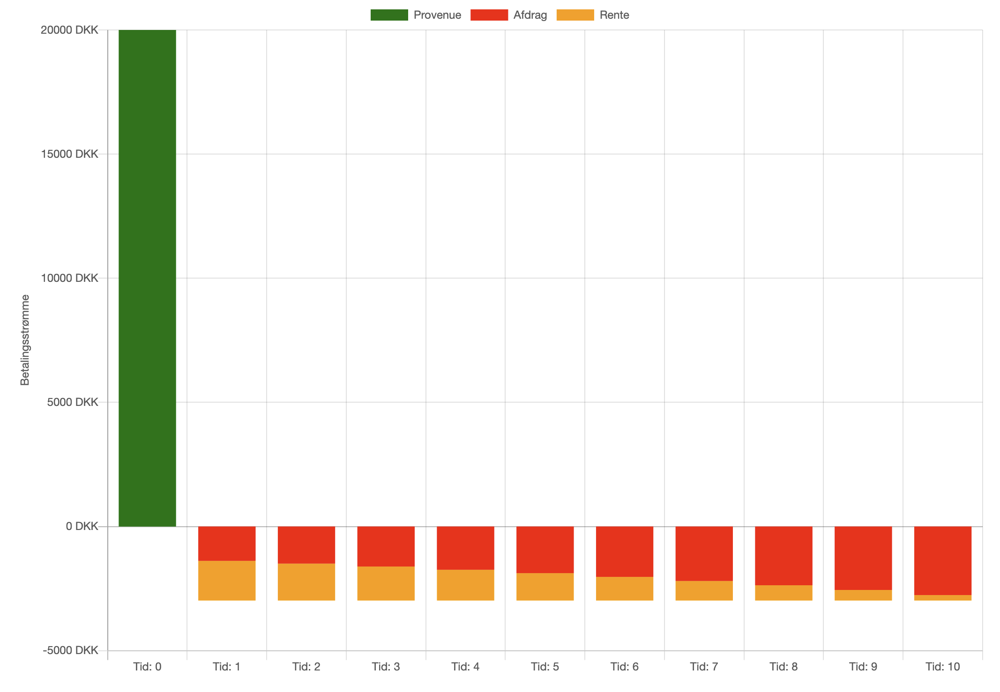
Annuitetslån restgæld
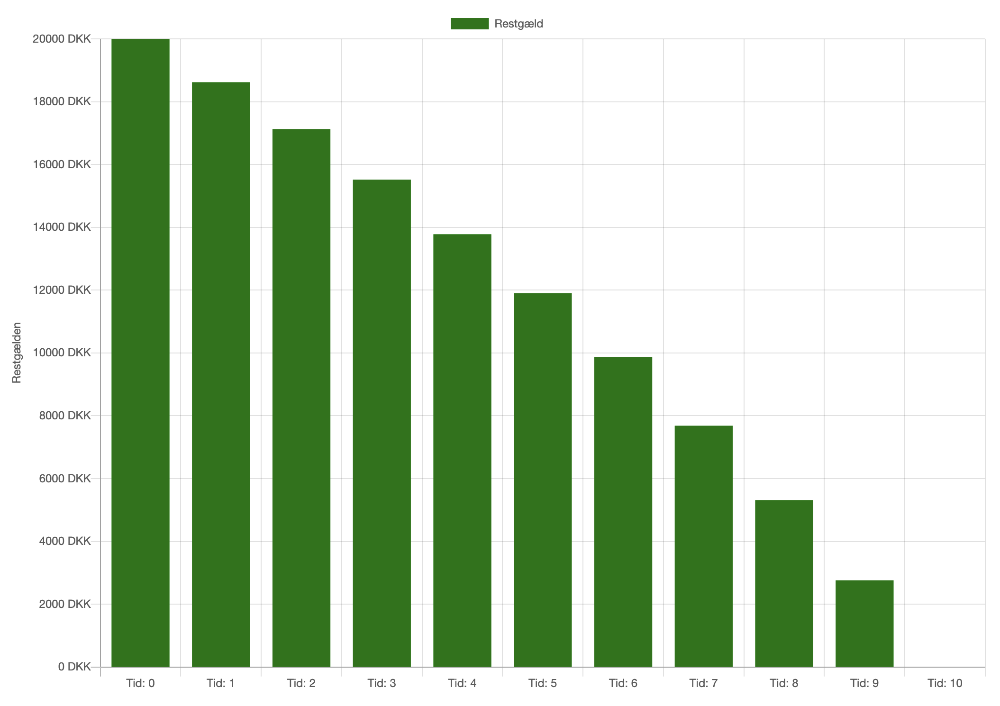
App beregning af annuiteter
App til annuiteter
Begrebsoversigt finansiering
| Begreb |
Forklaring |
Eksempel |
| Hovedstol |
Det oprindelige lånebeløb, som låntager officielt låner, renteberegning sker af
hovedstolen. Debitor (låntager) skal tilbagebetale hele hovedstolen til kreditor
(långiver). |
Et lån på 100.000 kr. |
| Ydelse |
Det beløb, låntager betaler regelmæssigt for at afdrage på lånet og betale renter.
For et annuitetslån består ydelsen af afdrag som nedbringer restgælden og renter som
beregnes af restgælden.
Annuitetslån er opbygget således at man betaler samme ydelse ved
hver termin, afdragsdelen af ydelsen er lille rentedelen af ydelsen er stor i starten,
under afviklingen af lånet stiger afdragsdelen og rentedelen falder. |
En månedlig betaling på 2.500 kr. |
| Nominel rente p.a. |
Den årlige rente, der er angivet på lånet, uden hensyn til gebyrer kurstab og renters
rente, den effektive rente p.a. vil ofte være højere end den nominelle rente pga. af
renters rente. |
En lånerente på 12% p.a. |
| Terminsrente |
Beregning af terminsrenten:
Terminsrenten er den nominelle rente divideret med antal terminer per år.
|
Nominel rente på 12% p.a. på et lån med månedlig rentetilskrivning giver en terminsrente
= 12% / 12 måneder = 1% per måned |
| Stiftelsesomkostninger |
Oprettelsen af et lån, ofte forbundet med gebyrer |
Et stiftelsesgebyr på 2.000 kr. for at oprette lånet |
| Kurs |
Den pris, obligationer eller lån handles til i procent af pålydende værdi eller
hovedstol. Huslån gennem realkredit samles i store grupper af huslån kaldet
obligationsserier, obligationerne sælges til
investorer . Prisen investorer betaler for hver 100 kr., der officielt lånes er kursen.
Er obligationen attraktiv er kursen høj. |
En lån med hovedstol på 100.000 kr. til kurs 98 betyder debitor (låneren) reelt får
98.000 kr. udbetalt minus eventuelle stiftelsesomkostninger/gebyrer.
|
| Provenu |
Det nettobeløb, låntager modtager, efter eventuelt fradrag af gebyrer og kurstab, dette
beløb er altså oftest mindre end hovedstolen, som er det officielle lånebeløb.
provenuet
er det beløb man rent faktisk får udbetalt, hovedstolen er beløbet der skal
tilbagebetales, og renteberegningen foretages af hovedstolen ikke provenuet. |
Ved et lån på 100.000 kr. med kurs 99 og gebyrer på 2.000 kr. er provenuet 100.000*0,99
- 2.000 = 97.000 kr. |
|
ÅOP (Årlige Omkostninger i Procent) |
Den samlede årlige omkostning ved lånet, inkl. renter og gebyrer, hvis man tager højde for
renters rente samt gebyrer og kurstab. ÅOP vil være højere end den effektive rente p.a., da
man indregner kurstab, stiftelse og eventuelle øvrige omkostninger i ÅOP.
ÅOP er det mest retvisende tal, når man skal danne sig et overblik over låneomkostningerne.
|
Et lån med 12% nominel rente p.a. kan f.eks. have en effektiv rente p.a. på 14,32% og ÅOP på
15,21% |
Nutidsværdi af annuitet
Nutidsværdi af en annuitet viser den aktuelle værdi af en række fremtidige, regelmæssige betalinger,
når man
tager højde for en given diskonteringsrente.
Dette koncept er vigtigt i mange finansielle
beslutninger,
såsom vurdering af investeringer eller lån. Her ser vi på eksempler med forskellige
rentetilskrivningsperioder.
Eksempel NV 1: Årlig rentetilskrivning
| Tekst |
Værdier |
Excel uden NV |
Excel med NV |
Resultat |
| Nutidsværdien af en årlig indbetaling på 10.000 kr. over 5 år med en årlig
nominel rente på 4% |
Indbetaling = 10000
Rente = 4%
År = 5 |
=10000*((1-(1+4%)^-5)/4%) |
=NV(4%;5;-10000) |
44.518,22 kr. |
Løsning Excel
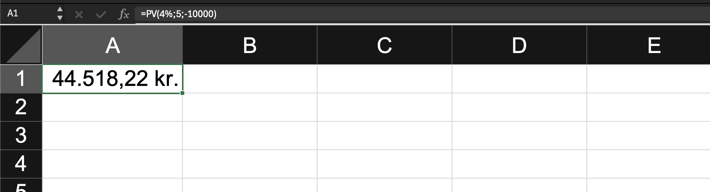
|
Eksempel NV 2: Kvartalsvis rentetilskrivning
| Tekst |
Værdier |
Excel uden NV |
Excel med NV |
Resultat |
| Nutidsværdien af en kvartalsvis indbetaling på 2.500 kr. over 5 år med en årlig
nominel rente på 4%
|
Indbetaling = 2500
Rente = 4%/4
År = 5*4 |
=2500*((1-(1+4%/4)^-(5*4))/(4%/4)) |
=NV(4%/4;5*4;-2500) |
45.113,88 kr. |
Løsning Excel
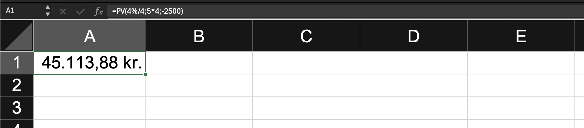
|
Eksempel NV 3: Månedlig rentetilskrivning
| Tekst |
Værdier |
Excel uden NV |
Excel med NV |
Resultat |
| Nutidsværdien af en månedlig indbetaling på 833,33 kr. over 5 år med en årlig
nominel rente på 4%
|
Indbetaling = 833,33
Rente = 4%/12
År = 5*12 |
=833,33*((1-(1+4%/12)^-(5*12))/(4%/12)) |
=NV(4%/12;5*12;-833,33) |
45793,00 kr. |
Løsning Excel
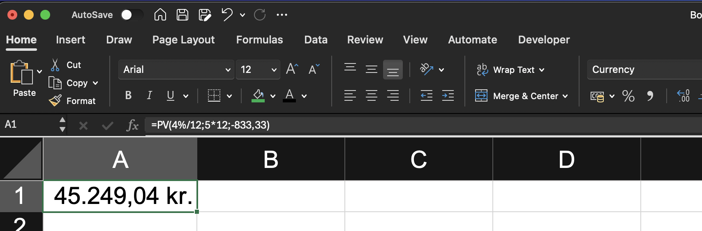
|
Disse eksempler illustrerer, hvordan man beregner nutidsværdien af regelmæssige fremtidige
indbetalinger over
forskellige rentetilskrivningsperioder. Bemærk, at jo hyppigere rentetilskrivningen er, desto højere
bliver
nutidsværdien af de fremtidige betalinger, selv når den samlede årlige indbetaling er den samme.
Excel's NV-funktion gør beregningerne enklere, især for annuiteter med forskellige
rentetilskrivningsperioder,
men det er også muligt at udføre beregningerne uden denne funktion ved at bruge formlen for
nutidsværdi af en
annuitet:
NV = PMT * ((1 - (1 + r)^-n) / r)
Hvor PMT er den regelmæssige indbetaling, r er
diskonteringsrenten
pr. periode, og n er antallet af perioder.
Fremtidsværdi af annuitet
Fremtidig værdi af en annuitet viser den akkumulerede værdi af en række regelmæssige indbetalinger
over tid, når
man tager højde for en given rente.
Dette koncept er vigtigt i mange finansielle situationer,
såsom
opsparingsplaner eller investeringsstrategier. Her ser vi på eksempler med forskellige
rentetilskrivningsperioder.
Eksempel FV 1: Årlig rentetilskrivning
| Tekst |
Værdier |
Excel uden FV |
Excel med FV |
Resultat |
| Fremtidig værdi af en årlig indbetaling på 10.000 kr. over 5 år med en årlig rente på 4%
|
Indbetaling = 10000
Rente = 4%
År = 5 |
=10000*((1+4%)^5-1)/4% |
=FV(4%;5;-10000) |
54.163,23 kr. |
Løsning Excel
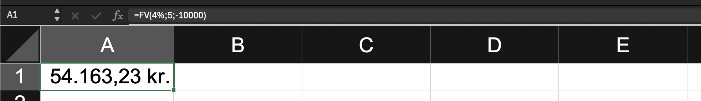
|
Eksempel FV 2: Kvartalsvis rentetilskrivning
| Tekst |
Værdier |
Excel uden FV |
Excel med FV |
Resultat |
| Fremtidig værdi af en kvartalsvis indbetaling på 2.500 kr. over 5 år med en årlig rente på
4% |
Indbetaling = 2500
Rente = 4%/4
År = 5*4 |
=2500*((1+4%/4)^(5*4)-1)/(4%/4) |
=FV(4%/4;5*4;-2500) |
55.047,51 kr. |
Løsning Excel
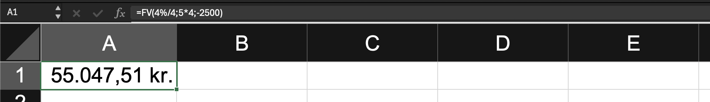
|
Eksempel FV 3: Månedlig rentetilskrivning
| Tekst |
Værdier |
Excel uden FV |
Excel med FV |
Resultat |
| Fremtidig værdi af en månedlig indbetaling på 833,33 kr. over 5 år med en årlig rente på 4%
|
Indbetaling = 833,33
Rente = 4%/12
År = 5*12 |
=833,33*((1+4%/12)^(5*12)-1)/(4%/12) |
=FV(4%/12;5*12;-833,33) |
55.248,93 kr. |
Løsning Excel

|
Disse eksempler illustrerer, hvordan man beregner den fremtidige værdi af regelmæssige indbetalinger
over
forskellige rentetilskrivningsperioder. Bemærk, at jo hyppigere rentetilskrivningen er, desto højere
bliver den
fremtidige værdi af indbetalingerne, selv når den samlede årlige indbetaling er den samme.
Excel's FV-funktion gør beregningerne enklere, især for annuiteter med forskellige
rentetilskrivningsperioder,
men det er også muligt at udføre beregningerne uden denne funktion ved at bruge formlen for
fremtidig værdi af
en annuitet:
FV = PMT * ((1 + r)^n - 1) / r
Hvor PMT er den regelmæssige indbetaling, r er renten
pr. periode,
og n er antallet af perioder.
Rente for annuitet
Renteberegning for en annuitet er en vigtig del af mange finansielle beslutninger. Det involverer
både den
nominelle rente (den angivne rente) og den effektive årlige rente, som tager højde for renters rente
effekten
ved hyppigere rentetilskrivninger.
Her ser vi på eksempler med forskellige
rentetilskrivningsperioder og
beregner både den effektive terminsrente og effektive årlige rente.
Eksempel RENTE 1: Årlig rentetilskrivning
| Tekst |
Værdier |
Excel RENTE |
Effektiv terminsrente |
Effektiv årlig rente beregning |
Effektiv årlig rente |
| Find renten for en annuitet med årlige indbetalinger på 10.000 kr. over 5 år, der giver en
slutværdi på
54.163,22 kr. |
Indbetaling = 10000
Perioder = 5
Slutværdi = 54163,22 |
=RENTE(5;-10000;0;54163,22) |
4,00% |
=(1 + 4%)^1 - 1 |
4,00% |
Terminsrente Excel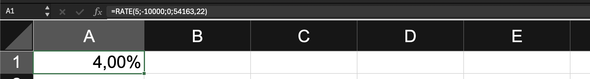
|
Eksempel RENTE 2: Halvårlig rentetilskrivning
| Tekst |
Værdier |
Excel RENTE |
Effektiv terminsrente |
Effektiv årlig rente beregning |
Effektiv årlig rente |
| Find renten for en annuitet med halvårlige indbetalinger på 5.000 kr. over 5 år (10
perioder), der giver
en slutværdi på 55.000 kr. |
Indbetaling = 5.000
Perioder = 10
Slutværdi = 55000 |
=RENTE(10;-5.000;0;55000) |
2,10% |
=(1 + 2,1%)^2 - 1 |
4,24% |
Terminsrente Excel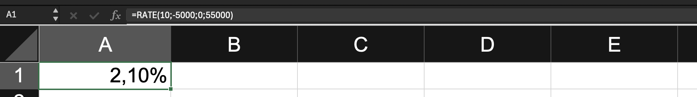
|
Eksempel RENTE 3: Kvartalsvis rentetilskrivning
| Tekst |
Værdier |
Excel RENTE |
Effektiv terminsrente |
Effektiv årlig rente beregning |
Effektiv årlig rente |
| Find renten for en annuitet med kvartalsvise indbetalinger på 2.500 kr. over 5 år (20
perioder), der
giver en slutværdi på 55.000 kr. |
Indbetaling = 2500
Perioder = 20
Slutværdi = 55000 |
=RENTE(20;-2500;0;55000) |
0,99% |
=(1 + 0,99%)^4 - 1 |
4,02% |
Terminsrente Excel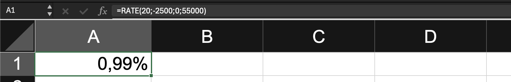
|
Eksempel RENTE 4: Månedlig rentetilskrivning
| Tekst |
Værdier |
Excel RENTE |
Effektiv terminsrente |
Effektiv årlig rente beregning |
Effektiv årlig rente |
| Find renten for en annuitet med månedlige indbetalinger på 833,33 kr. over 5 år (60
perioder), der giver
en slutværdi på 55.000 kr. |
Indbetaling = 833,33
Perioder = 60
Slutværdi = 55000 |
=RENTE(60;-833,33;0;55000) |
0,32% |
=(1 + 0,32%)^12 - 1 |
3,91% |
Terminsrente Excel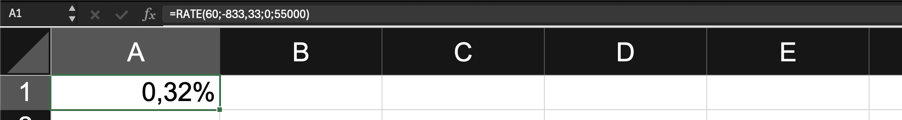
|
Disse eksempler illustrerer, hvordan man beregner renten for annuiteter med forskellige
rentetilskrivningsperioder.
Excel's RENTE-funktion beregner den effektive rente pr. periode (terminsrenten).
Den effektive årlige rente beregnes ved hjælp af formlen:
Effektiv årlig rente = (1 + r)^n - 1
hvor r er den effektive terminsrente, og n er antallet af rentetilskrivninger pr. år.
Ydelse for annuitet
YDELSE-funktionen i Excel beregner den periodiske betaling for en annuitet baseret på konstante
betalinger og en
konstant rente. Funktionen benyttes til beregning af låneydelser eller faste opsparingsbeløb.
Her ser
vi på eksempler med forskellige rentetilskrivningsperioder.
Eksempel YDELSE 1: Årlig ydelse
| Tekst |
Værdier |
Excel YDELSE |
Resultat |
| Beregn den årlige ydelse for et lån på 100.000 kr. over 5 år med en årlig rente på 4% |
Hovedstol = 100000
Løbetid = 5
Rente = 4% |
=YDELSE(4%;5;100000) |
-22.462,71 kr. |
YDELSE Excel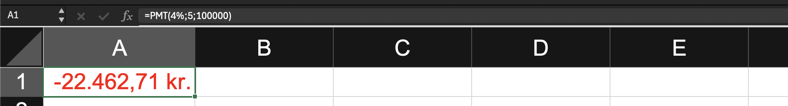
|
Eksempel YDELSE 2: Halvårlig ydelse
| Tekst |
Værdier |
Excel YDELSE |
Resultat |
| Beregn den halvårlige ydelse for et lån på 100.000 kr. over 5 år med en årlig rente på 4%
|
Hovedstol = 100000
Løbetid = 5*2
Rente = 4%/2 |
=YDELSE(4%/2;5*2;100000) |
-11.132,65 kr. |
YDELSE Excel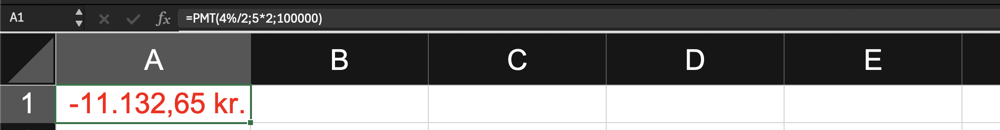
|
Eksempel YDELSE 3: Kvartalsvis ydelse
| Tekst |
Værdier |
Excel YDELSE |
Resultat |
| Beregn den kvartalsvise ydelse for et lån på 100.000 kr. over 5 år med en årlig rente på 4%
|
Hovedstol = 100000
Løbetid = 5*4
Rente = 4%/4 |
=YDELSE(4%/4;5*4;100000) |
-5.541,53 kr. |
YDELSE Excel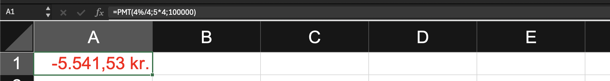
|
Eksempel YDELSE 4: Månedlig ydelse
| Tekst |
Værdier |
Excel YDELSE |
Resultat |
| Beregn den månedlige ydelse for et lån på 100.000 kr. over 5 år med en årlig rente på 4%
|
Hovedstol = 100000
Løbetid = 5*12
Rente = 4%/12 |
=YDELSE(4%/12;5*12;100000) |
-1.841,65 kr. |
YDELSE Excel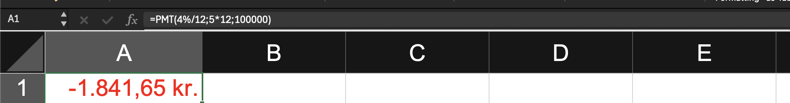
|
Disse eksempler illustrerer, hvordan man beregner ydelsen for annuiteter med forskellige
betalingsfrekvenser.
Bemærk, at jo hyppigere betalingerne er, desto mindre bliver den enkelte ydelse, men summen af alle
ydelser over
lånets løbetid vil være lidt højere på grund af renters rente effekten.
Excel's YDELSE-funktion gør beregningerne enkle, men det er også muligt at udføre beregningerne uden
denne
funktion ved at bruge formlen for annuitetsydelse:
YDELSE = Hovedstol * (r * (1 + r)^n) / ((1 + r)^n - 1)
hvor r er renten pr. periode, og n er det totale antal perioder.
Ved brug af YDELSE-funktionen i Excel er det vigtigt at huske:
- Renten skal angives pr. periode (årlig rente divideret med antal perioder pr. år for ikke-årlige
betalinger).
- Antal perioder skal være det totale antal over lånets løbetid.
- Et positivt resultat indikerer en betaling, mens et negativt resultat indikerer en modtagelse.
Finansiering bestemt provenu
Ofte vil låntager have et ønske om at få overført et bestemt lånebeløb, således er der ønske om et
bestemt provenu.
Normalt vil man beregne provenu ved at gange hovedstolen med kursen (herunder som
decimaltal dvs f.eks. 0,99 i stedet for 99) og fratrække
stiftelsesomkostninger.
Formlen er normalt:
provenu = Hovedstol*kurs - stiftelsesomkostninger
Vi ønsker nu i stedet at finde en ukendt hovedstol (vi kalder hovedstolen X herunder) ud fra et
kendt provenu.
Vi løser ligningen herunder ved at isolere hovedstolen X:
provenu = X * kurs - stiftelsesomkostninger ⇔
provenu + stiftelsesomkostninger = X * kurs ⇔
(provenu + stiftelsesomkostninger) / kurs = X
Vi kan altså altid finde den hovedstol låntager skal tilbydes, når der ønskes et bestemt provenu,
ved først at tillægge stiftelsesomkostninger til provenuet og bagefter dividere med kursen.
Eksempel
Alexander ønsker at låne 1.000.000,- til køb af ejerbolig, han ønsker at have hele beløbet til
rådighed.
Han har fået tilbudt lånet til kurs 98, og der vil være stiftelsesomkostninger på 10.000.
For at provenuet er præcis 1 mio. kan vi beregne hovedstolen til:
(provenu + stiftelsesomkostninger) / kurs =
(1.000.000+10.000)/0,98 =
1.030.612,24 kr.
Alternativt kan hovedstolen findes vha. målsøgning i Excel, som vist herunder:
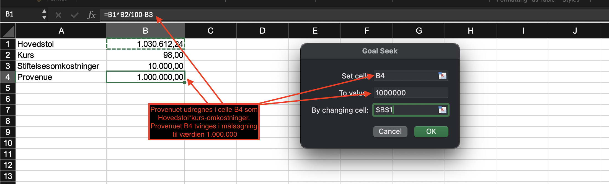
Finansieringscase: Boliglån
Sarah og Aksel ønsker at købe deres drømmehus. De har fundet det perfekte hjem, som koster 2.500.000
kr. De har
opsparet lidt over 500.000 kr. til udbetaling og skal derfor låne omkring 2.000.000 kr.
Banken tilbyder dem følgende lånebetingelser:
- Hovedstol: 2.000.000 kr.
- Løbetid: 30 år
- Nominel rente: 4% p.a.
- Rentetilskrivning: kvartalsvis
- Kurs: 99
- Stiftelsesomkostninger: 12.000 kr.
Opgaver:
- Beregn den effektive rente per år, når der tages højde for den månedlige rentetilskrivning.
- Udregn kurstabet i kroner.
- Beregn det faktiske provenu, som Sarah og Aksel modtager efter kurstab og
stiftelsesomkostninger.
- Bestem den månedlige ydelse på lånet
- Beregn ÅOP (Årlige Omkostninger i Procent) for lånet, når alle omkostninger inkluderes.
Løsningsforslag Excel
Excel Finansieringscase løsningsforslag
Løsning med app
Annuitetslån input app
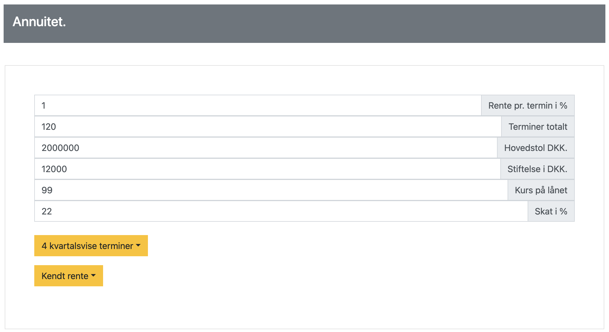
Annuitetslån cashflows
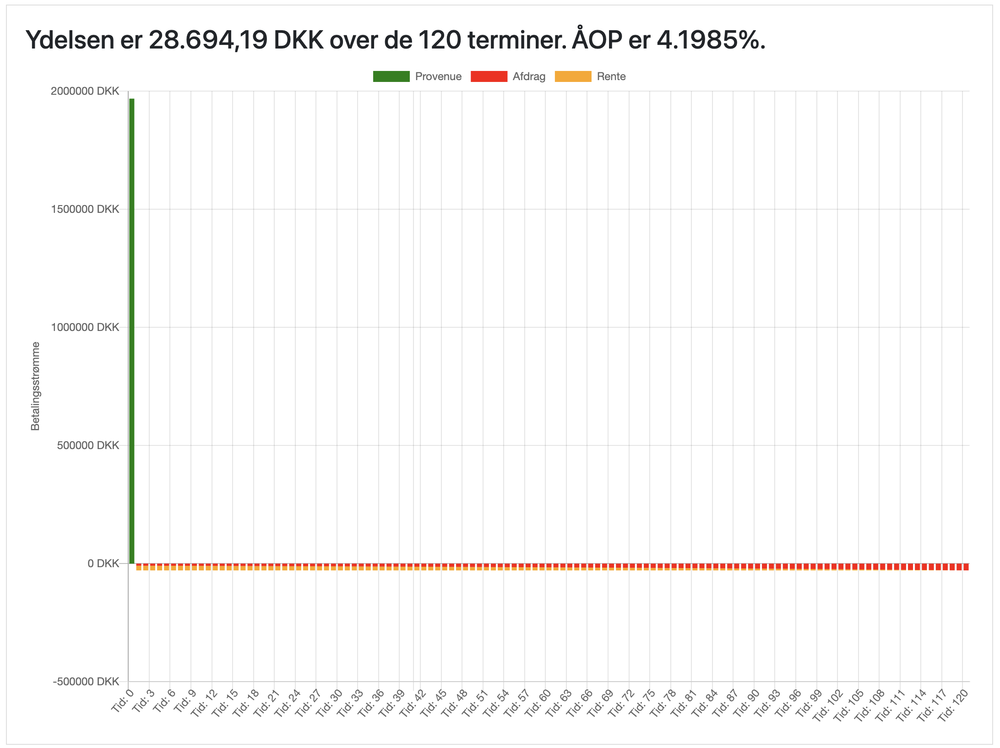
Annuitetslån restgæld
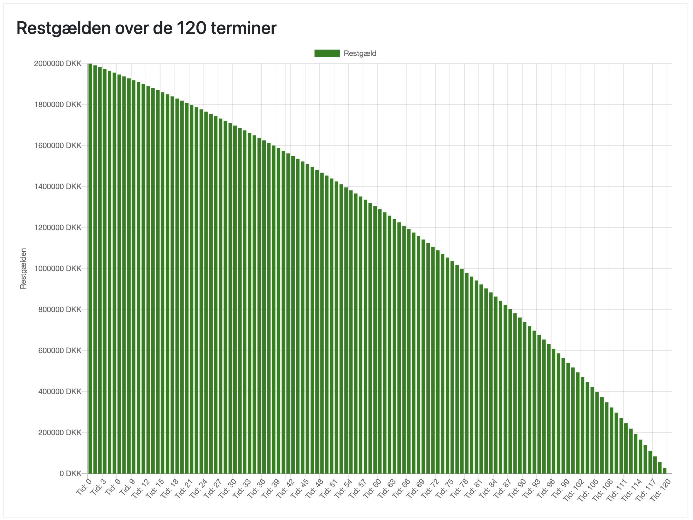
Quiz
Quiz annuiteter
Quiz annuiteter